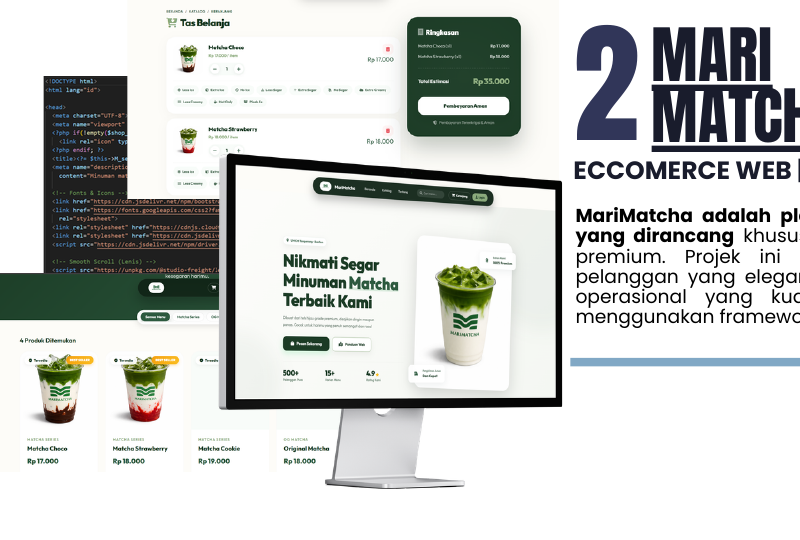

No.01 / 11 — E-Commerce Web — 2026
MariMatcha Shop
Platform e-commerce modern khusus produk Matcha premium. Menggabungkan antarmuka pelanggan yang elegan dan segar dengan sistem manajemen operasional yang kuat di sisi admin.
CodeIgniter 3LaravelPHPMySQLCSS3Figma
